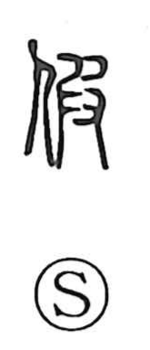

仮

Uncategorized
Kun: kari, karu, kasu | On: ka, ke
temporary ・ provisional ・ assumed ・ substitute ・ imitation
Explanation
Originally written 假, this is a phono-semantic graph: the person radical indicates a human context, while 艮 serves as the phonetic element for ka. Shirakawa explains 艮 as depicting the quarrying of a rough stone and its careful polishing into beautiful jade. In this light, 假 evokes the crafted completion of a human face—hence 仮面, a mask, a made face placed over one’s own. From the idea of a fabricated stand-in for the real, the character comes to mean something that imitates the original and temporarily takes its place, giving rise to senses such as provisional and temporary, as in 仮に.